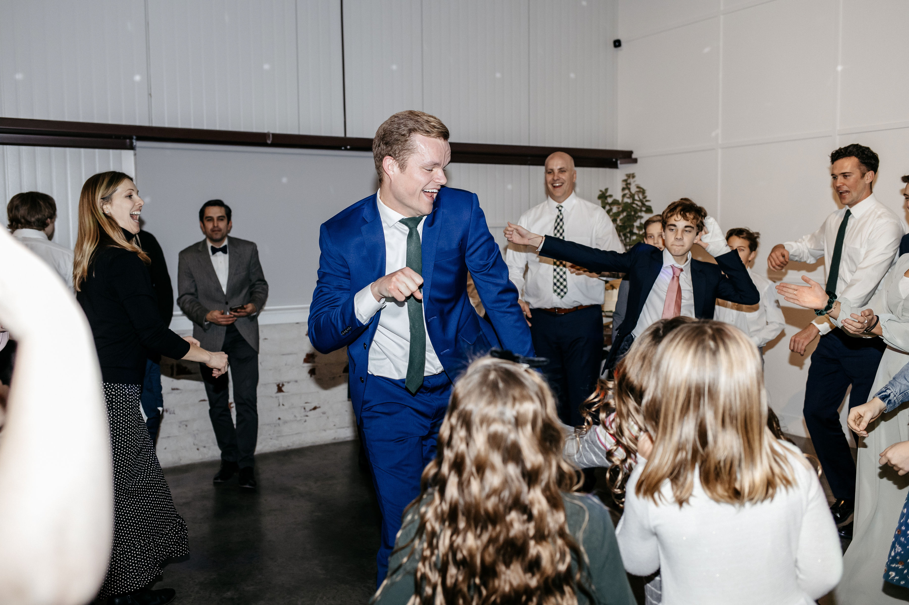
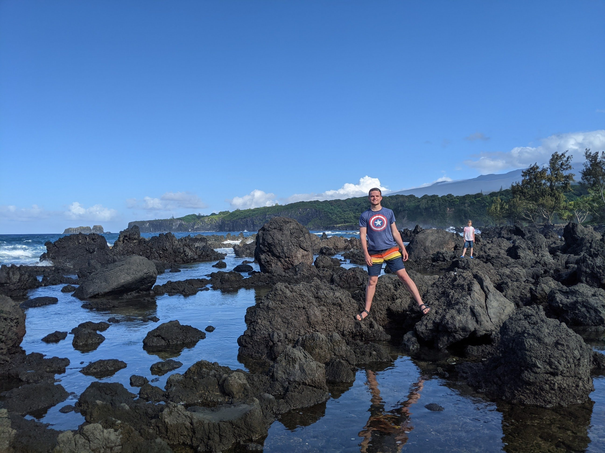

My name is Jordan Johnston. I'm a 22 year-old student at Brigham Young University in Provo, Utah. My aim with my education is to obtain a degree in Human Resource Management from the BYU Marriott School of Business.
I have lots of different interests and hobbies. I love playing sports and spending time on outdoor adventures. I have played the piano for 16 years and love music. My favorite music to listen to is country (See my favorite artist), but I enjoy a wide variety of genres. I also really enjoy dancing, whether by myself or with a partner.
I'm including information from my resume below. Contact me with any further questions (fakeemail@website.com or 123-456-789).
-
Education
- Pre-business major
- GPA: 3.87
- ACT score: 34
High School Diploma (Palmer Ridge HS, Monument, CO)
Brigham Young University (Graduating April 2024) -
Work Experience
- Kneaders Bakery and Cafe (Cashier)
- Oct 2020-Apr 2021, Jan 2022-Present
- Operated register for cash and card transactions.
- Oversaw fulfillment of in-store, online, phone, and drive-thru food orders.
- Promoted customer loyalty by efficiently handling food and service complaints.
- Fox Pest Control (Route Manager)
- May-Aug 2022
- Generated $40,000+ in revenue through sale of residential pest control contracts.
- Completed inspections with existing customers to ensure satisfaction with service.
- Participated in weekly leadership training to ensure well-being and success of 30 sales staff members.
- Received daily training on ethical and effective sales practices.
- Vector Marketing (Assistant Manager/Recruiting Specialist)
- Sep 2017-Aug 2018
- Trained team members in effective strategies to meet sales and networking targets.
- Recruited, interviewed, and hired individuals which would add value to the sales staff.
- Provided individualized training and mentoring to new hires.
- Generated $30,000+ in revenue through sale of kitchen products to new and existing customers.
- Generated 5-10 referrals per sales presentation to increase client base.
- Kneaders Bakery and Cafe (Cashier)
-
Skills (level of mastery: 1=novice, 5=expert)
- Spanish language speaking: 4.5
- Database Modeling: 2
- SQL: 2
- Flowcharting: 2
- Excel Automation (VBA): 3
- Tableau (data analytics and visualization): 3
- Solver (optimization with Excel): 4
- Web Development (HTML CSS): 3